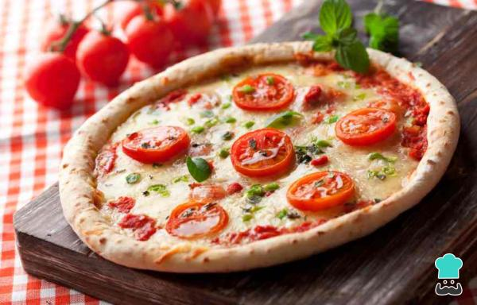

Autor de la receta Edgardo Comas
viernes 11 de marzo de 2022, 21:30hs
Receta para hacer una piza napolitana

Ingredientes para la masa
- Harina 0000 250 grm
- Aceite de oliva
- Sal una pizca
- Agua 125 ml
- Levadura fresca 20 grm
Ingredientes para el relleno
- 125 mililitros de Salsa de tomate
- 250 gramos de Mozzarella
- 2 unidades de Tomates frescos
- 1 pizca de Sal
- 1 diente de Ajo
- 2 cucharadas de postre de Perejil
- 10 unidades de Aceitunas verdes
- 20 mililitros de Aceite de oliva
RECETA